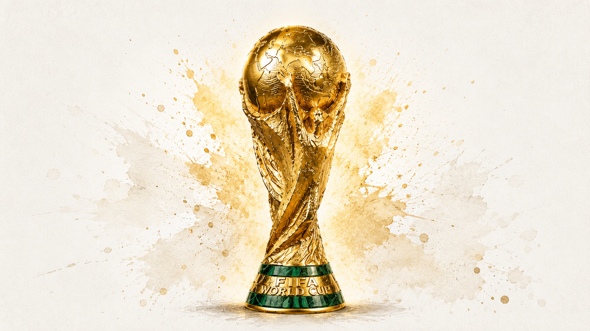

fifa world cup 2026
48 nations. 1,246 players. One tournament. The World Cup has grown steadily since Uruguay hosted the first edition in 1930 with just 13 nations. It expanded to 16 in 1934, reached 24 in 1982 and jumped to 32 in 1998. A format that held for seven consecutive tournaments.
This year, 16 new nations will take part of the world's biggest stage. What follows is the full picture of the squads, the leagues, the clubs and the ages behind the most ambitious World Cup in the competition's 96-year history.
From the rain-soaked pitches of South Africa to the floodlit arenas of New York and Los Angeles, players from every corner of the globe have earned their place.
Every confederation on earth has a seat at the table. Europe sends its usual heavyweight contingent. South America brings its flair and history. Africa, long underrepresented, now has more slots than ever. And for the first time, a World Cup is being co-hosted by three nations — two of them making their case as genuine contenders on home soil.
From the windswept islands of Cape Verde to the football heartlands of Brazil and Germany, the map of this World Cup stretches further than any edition before it. No single region dominates the story. That is precisely the point.
Loading map…
When the tournament kicks off, some clubs will have more players on the pitch, spread across different squads, than most nations have in their entire squad. For 2026, 1,246 players drawn from 449 different clubs across 69 professional leagues in 71 countries.
The Premier League dominates the numbers with 200 players — nearly one in six of everyone at the tournament. The Bundesliga (108) and Ligue 1 and La Liga (86 each) follow. Serie A (71), the Saudi Pro League (49) and Major League Soccer (48) round out the top tier, reflecting both the traditional power centres of European football and the rising ambition of leagues in the Gulf and North America.
Manchester City leads the way with 19 players at the tournament, followed closely by Bayern Munich (18), Paris Saint-Germain and Arsenal (16 each), and Barcelona (15). Real Madrid (10), Liverpool (11) and Atlético Madrid (12) are not far behind.
These clubs have not just produced the best players in the world — they have built the squads that national managers depend on. When Germany faces Spain, or England takes on Brazil, there is a very real chance that teammates at club level are standing on opposite sides.
The "Citizens" alone will have players representing multiple nations across different groups. It is one of the quiet subplots of every World Cup: club loyalty suspended, national identity restored.
For some nations, their best players never left. For others, you have to search six continents to find the squad.
One of the most revealing statistics in any World Cup squad is the split between players competing in their domestic league and those who have moved abroad to ply their trade. It tells you something about the strength — and the pull — of a country's football pyramid.
Saudi Arabia and Qatar stand at one extreme: 96% of both squads play at home, a direct result of investment that has kept — and attracted — top-level talent within their borders. England (81%) and Germany (73%) are also high, their domestic leagues simply being among the best in the world.
At the other end, six nations send 100% of their squad from clubs abroad: Cape Verde, Curaçao, DR Congo, Ivory Coast, Senegal and Uruguay. For these countries, the diaspora *is* the squad. Every single player earns their living in a foreign league, from Sadio Mané in Saudi Arabia to Franck Kessié at Al-Ahli to Federico Valverde at Real Madrid.
The average age across all 1,246 players is 27.5 years — a figure that has barely moved across tournaments, a reflection of when players typically hit their peak. The middle of the bell curve is predictable: most players are between 24 and 30, the sweet spot where physical sharpness and tactical experience come together.
But the outliers are where the narrative lives. Mexico's Gilberto Mora is just 17 — born in 2008 — and arrived at Tijuana already earning international minutes. At the opposite end, Scotland's Craig Gordon, a goalkeeper at Heart of Midlothian, is 43 years old and making his case that age is just a number between the posts. Between them lies 26 years of football, and both will be on the same pitch at the same tournament.
The bubble chart below maps every squad's age profile — which nations are building for the future, and which are leaning on experience for one last run.
Ninety-six years. Twenty-three editions. And now, for the first time, the World Cup is bigger than anyone imagined it could be. Forty-eight nations means new stories that have never been told on this stage — first-time qualifiers facing established powers, diaspora squads carrying the hopes of millions, and teenagers sharing a pitch with veterans older than they have been alive.
The numbers are extraordinary. But football has always been about more than numbers. It is about Craig Gordon, at 43, pulling on gloves one more time. It is about Gilberto Mora, still only 17, learning what it means to play under this kind of pressure. It is about the six nations who could not find a single player worth picking at home — because their best footballers have scattered across the world in search of the highest possible level.
